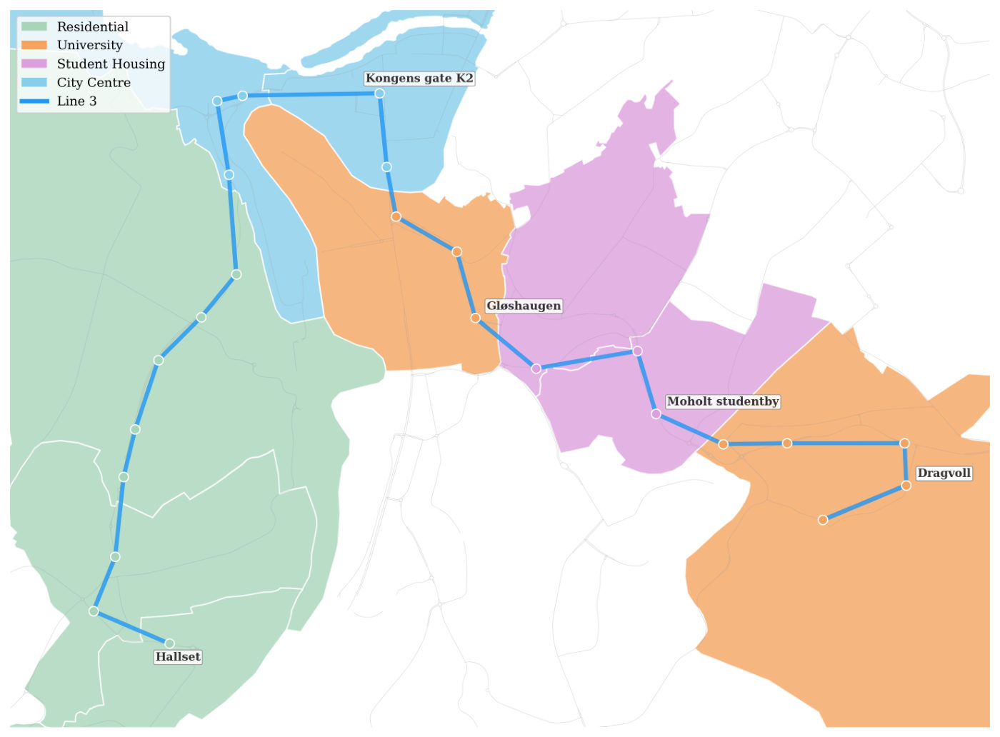
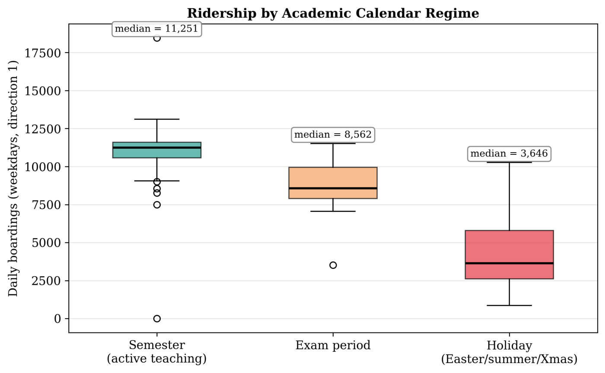

I got a full year of data from the automatic passenger counters on Trondheim's bus Line 3: every time a bus stopped, how many people got on. After removing the 52,210 stop visits where the counter wasn't active, that left 1,743,956 stop visits from 2025, along a route that runs from Hallset, through the city centre and the Gløshaugen campus, out to Dragvoll. Aggregated to boardings per stop and hour, that's about 323,000 stop-hours.
The question was simple: what decides how many people get on the bus, where, and when? Most of the answer turned out to be the university calendar. Getting there took a fairly large Bayesian model, and the model didn't win every comparison.

Choosing a likelihood
Boardings are non-negative integers, so ordinary regression is out. The textbook starting point is a Poisson model with a log link, where the variance equals the mean. Ridership doesn't behave like that; some hours are far busier than the average suggests. That's overdispersion, and the Negative Binomial handles it by adding a quadratic term:
$$\mathrm{Var}(Y_{it}) = \mu_{it} + \frac{\mu_{it}^2}{\theta}.$$When \(\theta\) is small the counts are very spread out; as \(\theta \to \infty\) you're back at Poisson. On this data the model estimated \(\hat\theta = 4.52\) (95% CI \([4.46, 4.58]\)), so there is a lot of extra variance. Comparing the two likelihoods on the same model made the choice easy:
| Likelihood | DIC | WAIC |
|---|---|---|
| Poisson | 1,051,667 | 1,642,753 |
| Negative Binomial | 825,679 | 835,966 |
The Poisson model gave similar point predictions. The difference was in the uncertainty: Poisson assumed it was much more precise than it was, which gives intervals that are too narrow.
Try: drag θ. Notice: both distributions have the same mean (20 boardings), but a small θ spreads the Negative Binomial far wider than Poisson allows.
The model
The model is a structured additive regression (STAR) for stop \(i\) and date-hour \(t\), fitted to the Dragvoll → Hallset direction:
$$\begin{aligned}\log \mu_{it} = {} & \beta_O \log O_{it} + \beta_0 + \mathbf{c}_{it}^\top\boldsymbol\beta + \textstyle\sum_{k,l}\gamma_{kl}\,\mathbf 1[\text{regime}_t{=}k]\,\mathbf 1[\text{type}_i{=}l] \\ & + f_{\text{season}}(w_t) + f_{\text{day}}(d_t) + f^{d}_{\text{time}}(h_t) + f^{d}_{\text{space}}(i) + f_{\text{stop}}(i) + \delta_d(h_t, i).\end{aligned}$$Piece by piece:
- \(O_{it}\) is the number of buses at that stop in that hour. Instead of forcing a fixed offset ("double the buses, double the riders"), its coefficient \(\beta_O\) is estimated.
- \(\mathbf c_{it}\) holds district demographics (population, employment, students), the type of stop and a Sunday indicator.
- \(\gamma_{kl}\) lets the academic calendar (semester, exam, holiday) hit each type of stop differently.
- The \(f\)'s are smooth curves over week of the year, hour of the day and position along the route, with separate curves for weekdays and weekends.
- \(\delta_d(h, i)\) gives every stop its own daily rhythm.
Smoothness as a prior
The smooth curves get random walk priors. A second-order random walk (RW2) says that the change in slope between neighbouring points is small:
$$f(z_i) - 2f(z_{i-1}) + f(z_{i-2}) \sim \mathcal N(0, \tau_f^{-1}).$$Large \(\tau_f\) means a stiff, smooth curve; small \(\tau_f\) lets the data bend it. The space-time interaction uses a Kronecker product of the temporal and spatial precision matrices,
Try: drag the prior strength. Notice: weak smoothing chases every noisy point; strong smoothing flattens the real morning and afternoon peaks. The right amount sits in between, and the model learns it from the data.
which makes neighbouring hours at the same stop, and neighbouring stops at the same hour, look alike.
Priors that prefer simple models
Each precision \(\tau\) needs a prior. Instead of the classic Gamma prior, I used penalised complexity (PC) priors. They start from a "base model" where the effect doesn't exist, and penalise moving away from it. In practice you only say something interpretable like "the standard deviation of this effect is above \(U\) with probability \(\alpha\)":
$$\Pr(\sigma > U) = \alpha \quad\Longrightarrow\quad \sigma \sim \mathrm{Exp}(\lambda),\quad \lambda = -\frac{\ln \alpha}{U}.$$Everything was fitted with INLA, which approximates the posterior directly instead of sampling it, and is fast enough for hundreds of thousands of observations.
What the model found
The academic calendar
Raw data first: on a typical weekday the line carried a median of about 11,250 boardings in one direction during the semester, 8,560 during exams and 3,650 in holidays.

In the model, the calendar's effect depends heavily on the type of stop. These are the estimated interaction coefficients, all with credible intervals well away from zero:
| Stop type | × Exam | × Holiday | Holiday effect |
|---|---|---|---|
| University | −0.15 | −0.87 [−0.90, −0.85] | −58% |
| Student housing | −0.10 | −0.27 | −24% |
| City centre | −0.04 | −0.04 | −4% |
On the log scale, \(e^{-0.87} = 0.42\): university stops lose 58% of their riders in the holidays, while the city centre barely notices. A model with one shared "holiday effect" would get every single stop wrong. Weather (temperature, rain, wind) had only weak associations once the calendar was in the model.
Service frequency
The service coefficient came out at \(\hat\beta_O = 0.62\) (95% CI \([0.59, 0.64]\)). Since \(\mu \propto O^{0.62}\), doubling the number of buses gives
$$2^{0.62} \approx 1.54,$$so about 54% more boardings, not 100%. Adding buses to an already busy route helps, with diminishing returns.
Other effects
- Sundays have about \(e^{-0.31} = 0.73\) times Saturday's ridership.
- Stops in student-housing districts have clearly higher baseline ridership (\(\hat\beta = 2.06\), CI \([0.55, 3.66]\)).
- Day-to-day variation not explained by anything else is large: a standard deviation of about 0.49 on the log scale.
- The space-time interaction matters: Dragvoll peaks in the afternoon as students leave campus, while residential stops are much flatter.
Prediction
To test the model, I hid two full weeks, 7–13 April and 6–12 October, fitted on the remaining 351 days, and predicted the missing counts. Then I compared it with a ladder of simple baselines:
| Method | MAE | RMSE | r |
|---|---|---|---|
| Global mean | 20.31 | 32.55 | 0.000 |
| Per-stop mean | 12.30 | 24.11 | 0.677 |
| Stop × day-type mean | 11.32 | 22.80 | 0.718 |
| Stop × hour × day-type mean | 5.63 | 11.34 | 0.942 |
| STAR model | 7.90 | 16.55 | 0.869 |
The lookup table beat my model on point predictions. That's less surprising than it looks. The lookup table has \(26 \times 19 \times 2 = 988\) free parameters and no regularisation. When the test weeks come from exactly the same stop-hour-day cells as the training data, memorising each cell's average is close to optimal.
What the lookup table can't give you is a reason, or an honest uncertainty. For the model I drew from the Negative Binomial predictive distribution and checked how often the true value fell inside each interval:
| Nominal | Empirical coverage | Mean width |
|---|---|---|
| 50% | 60.6% | 11.8 |
| 80% | 84.2% | 22.6 |
| 90% | 92.0% | 29.2 |
| 95% | 95.7% | 35.1 |
The intervals are well calibrated, slightly conservative at the low end, and the coverage held up across seasons and day types. For planning a timetable, a calibrated range and an explanation are more useful than a slightly better point estimate.
Try it yourself
Two of the model's estimates, made playable: how a university stop and a city-centre stop change between semester, exams and holidays, and how boardings respond to adding buses. Everything is relative to a semester day with three buses an hour.
Try: switch between semester, exams and holiday, then drag the number of buses (100 = a semester day with 3 buses an hour). Notice: the university stop collapses in the holidays while the city centre barely moves, and doubling the buses gives +54%, not +100%.